Видеозвонок на двоих в браузере
Видеозвонок с готовыми фразами по движениям и субтитрами английской речи. Без установки приложения.
Камера запрашивается только после создания или подключения к звонку.
Создайте звонок и отправьте ссылку
Собеседник откроет её в браузере. Регистрация не нужна.
Показывайте движения или говорите
Движение превращается в готовую фразу, а речь — в английские субтитры.
Читайте фразы и субтитры во время разговора
Всё сказанное остаётся в чате рядом с видео.
Отвечайте движением, голосом или текстом и меняйте способ в любой момент. Собеседник читает всё в одном месте.
11 заданных движений, у каждого — своя английская фраза. Вы подтверждаете отправку.
Английская речь появляется субтитрами поверх видео говорящего.
Чат открыт на протяжении всего звонка — для уточнений, имён и адресов.
Если движение видно не полностью, SignBridge подскажет, что поправить. Фраза не уходит сама: вы видите результат и решаете — отправить её или повторить.
Движения в SignBridge — условные: они назначены фразам в приложении и не являются жестами жестового языка для этих слов.
{{f.a}}
Создайте звонок и отправьте ссылку — собеседнику ничего не нужно устанавливать.
{{permV.text}}
В этом звонке уже два участника, или он завершён. Попросите собеседника прислать новую ссылку — или создайте свой звонок.
Отправьте ссылку — звонок откроется, как только собеседник подключится.
{{copiedMsg}}
После подключения покажите движение в кадре или ответьте голосом или текстом — собеседник увидит фразу в чате и поверх видео.
Проверьте интернет. Чат и история разговора сохранены в этой вкладке.
{{endMeta}}
История доступна в этой вкладке до её закрытия или возвращения на главную.
В этом звонке не было сообщений.
Затем браузер попросит доступ к камере и микрофону.
История разговора останется в этой вкладке.
Покажите движение так, чтобы кисти и локти были в кадре. Фраза «{{helpSel}}» появится как черновик — отправлять её или нет, решаете вы.
Движения условные: они назначены фразам в SignBridge и не являются жестами жестового языка.
Команды показываются в области «Команды» в левом верхнем углу вашего превью. Пока рука в этой области, фразы не распознаются.